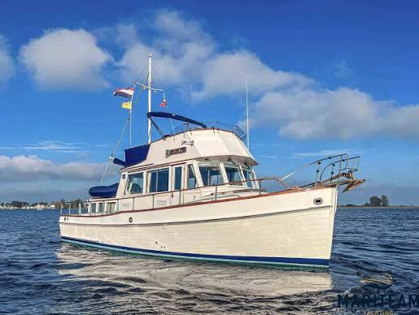

Grand Banks 36 Classic
1964–2004
The Grand Banks 36 Classic is a traditional tri-cabin flybridge cruiser with a semi-displacement hull, an aft owner cabin and a forward guest cabin. It was offered with single or twin diesel shaft propulsion and became one of the defining models of the Grand Banks range. Its layout provides substantially more privacy and cruising capacity than the 32 while retaining walkaround decks and lower and upper helm positions.

- Length
- 36.83 ft
- Beam
- 12.67 ft
- Draft
- 4 ft
- Hull behaviour
- Semi-Displacement
- Fuel
- Diesel
- Propulsion
- Shaft
- Engine configuration
- Single or twin inboard diesel
- Boat family
- Trawler
- Construction
- Wood through mid-1973; fiberglass thereafter
Best for
- Couples wanting a private aft cabin and separate guest space
- Extended inland and coastal cruising
- Owners who value traditional Grand Banks layout and joinery
Trade-offs
- Aft-cabin layout raises the profile and increases windage
- Exterior teak and aging systems create a significant maintenance burden
- Engine-room access varies with machinery configuration
- Larger dimensions and air draft complicate storage and some waterways
Known concerns
- No model-specific concern has been promoted to B-Atlas’s evidence threshold. This does not mean the model has no age-, condition- or hull-specific risks.
Inspection focus
- Identify the exact construction year, engine arrangement and major production-era changes
- Inspect teak decks, window frames and deck penetrations for moisture
- Inspect fuel tanks, exhaust systems and electrical modernization
- Check aft-cabin and side-deck access for the intended crew
Continue researching
Related boat models
36.83 ft · Semi-Displacement
31.92 ft · Semi-Displacement
42.58 ft · Semi-Displacement
47.08 ft · Semi-Displacement
36.83 ft · Displacement
36.83 ft · Displacement
About this record
B-Atlas preserves uncertainty: missing information remains unknown rather than being treated as a negative. Specifications and guidance describe the model record; individual boats can differ by year, equipment, refit and condition.